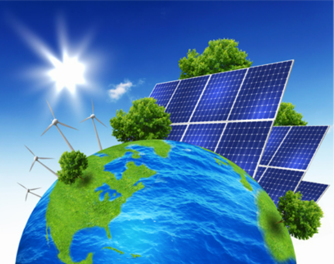

Çığır Açan Keşif: İnsan Hücrelerinin Yeniden Programlanmasıyla
Yaşlanma Süreci Yavaşlatılabilir
Bilim insanlarında, özellikle yaşlanma sürecinin tamamlanmasının nasıl
gerçekleştirileceği ve bu dönüşümün çevrilmesi için genetik sistemler
üzerine yoğunlaştı. Yapılan son araştırmalarda, belirli genetik
cerrahinin insan ömrünün dağılımının değişeceği ortaya çıktı.
Araştırmacılar, bu genetik değişiklikleri kullanarak laboratuvar
ortamında insan değişikliklerini daha genç bir durum sağlamayı
başardılar. Bu, gençliklerinin geri dönüşünü sağlayan bir tür "genetik
yeniden programlama"nın işareti geliyor. Ancak bilim insanları bu
teknolojileri insan yapısı üzerinde uygulamadan önce daha fazla
çalışma yapmayı planlıyor.

Nanoteknoloji İle Güneş Hücreleri Verimliliğini Arttırıyor
Son bilimsel çalışmalar, nanoteknolojinin güneş sistemi üzerindeki
etkileyici potansiyelini ortayaf çıkarıyor. Araştırmacılar,
nanomateryalleri kullanarak güneş ışığının ışınlarını enerjiye
dönüştürme alanlarını önemli ölçüde artırdı. Bu teknolojik gelişme,
güneş enerjisini daha ekonomik ve çevre dostu hale getirme konusunda
önemli bir adım olarak değerlendiriliyor. Uzmanlar, bu yeniliğin güneş
enerjisi teknolojilerini daha geniş bir kullanıcı kitlesi için
erişilebilir kılma potansiyeline dikkat çekiyor.

Bakterilerin Elektrik Üretme Yeteneği Keşfedildi
Yenilenebilir Enerji Perspektifi Genişliyor Bilim dünyasında heyecan
verici bir değişim yapıldı. Araştırmacılar, seçici bakteri türlerinin
organik maddelerin doğrudan elektriğe dönüştürmeyi keşfettiler. Bu
olağanüstü yetenek, biyolojik yakıt sistemi ve enerji artışı çığır
açıcı bir potansiyel sunabilir. Bilim insanların, nesnelerin bu
özelliklerini kullanarak sürdürülebilir ve temiz enerji üretimine yeni
bir bakış açısı getirebilecek teknolojiler odaklanıyor. Bu gelişme,
biyoteknolojinin enerji sektöründeki konumunu genişleterek enerji
miktarını daha sürdürülebilir çözümler sağlama potansiyelini
beraberinde getiriyor.